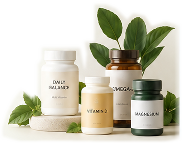

같이 먹어도 될까? 1분이면 확인
영양제 궁합 체크
먹고 있는 영양제를 모두 고르면 조합별 궁합과 이유, 그리고 간격을 고려한 하루 복용 시간표를 바로 만들어 드립니다.
바로 해보기
- 최대 8개까지 한 번에 비교
- 시간 간격·용량 주의까지 표시
- 하루 복용 시간표 자동 생성

1영양제 선택 0 / 8
성분을 2개 이상 선택하면 궁합 결과와 복용 시간표가 나타납니다.
2궁합 결과
3추천 복용 시간표
선택한 성분의 권장 시간과 간격 규칙을 반영해 자동으로 배치했습니다.
4선택한 성분 제품 찾기
쇼핑몰 검색 결과로 바로 이동합니다. 함량과 형태는 제품 라벨을 확인하세요.
이 사이트는 쿠팡 파트너스 및 링크프라이스 등 제휴 마케팅 활동의 일환으로, 구매 시 일정액의 수수료를 제공받을 수 있습니다.
궁합 등급은 이렇게 정했어요
식약처 인정 기능성과 일반적인 섭취 기준을 바탕으로 네 가지 등급으로 나눴습니다.
좋은 궁합
흡수·작용을 서로 돕거나 같은 목적에서 보완적인 조합. 같은 시간에 먹어도 좋습니다.
주의 궁합
흡수 경쟁이나 용량 중복이 있어 시간을 띄우거나 합산 함량을 확인해야 하는 조합.
피해야 할 궁합
부작용 위험이 겹쳐 병용을 권하지 않거나 전문가 상담이 필요한 조합.
무난한 궁합
알려진 특별한 상호작용이 없는 조합. 각 성분의 권장 시간만 지키면 됩니다.
일반 성인의 일반적인 용량을 기준으로 한 참고 정보입니다. 임신·수유 중이거나 질환이 있거나 약을 복용 중이면 반드시 의사·약사와 상담하세요.